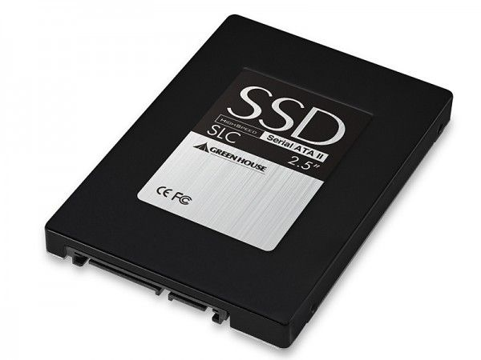
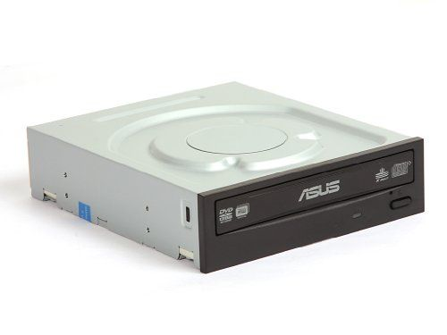
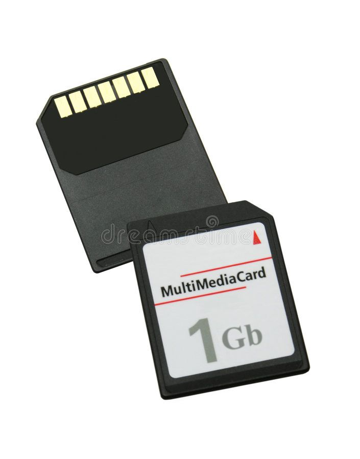
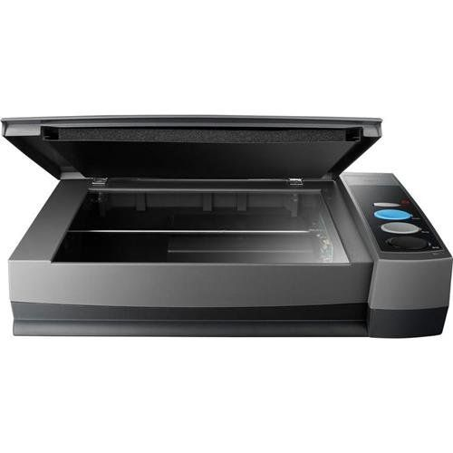
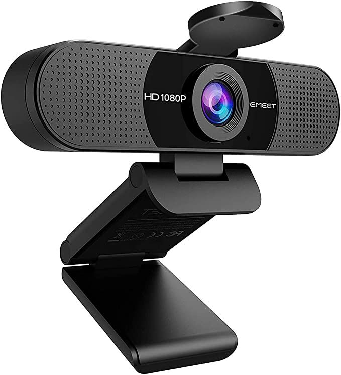
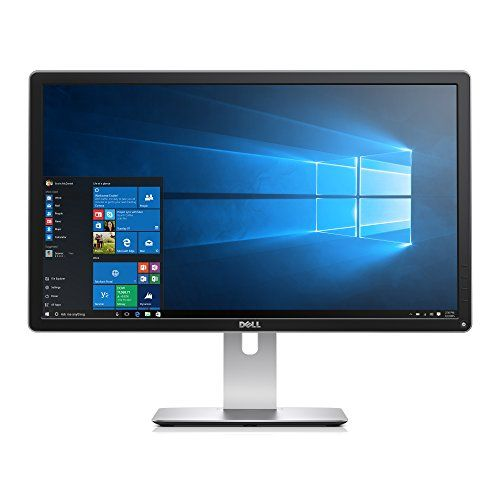
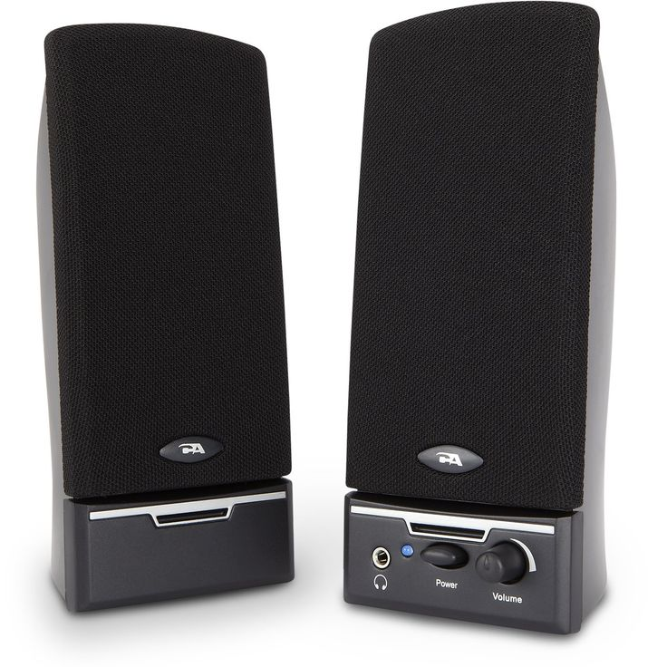
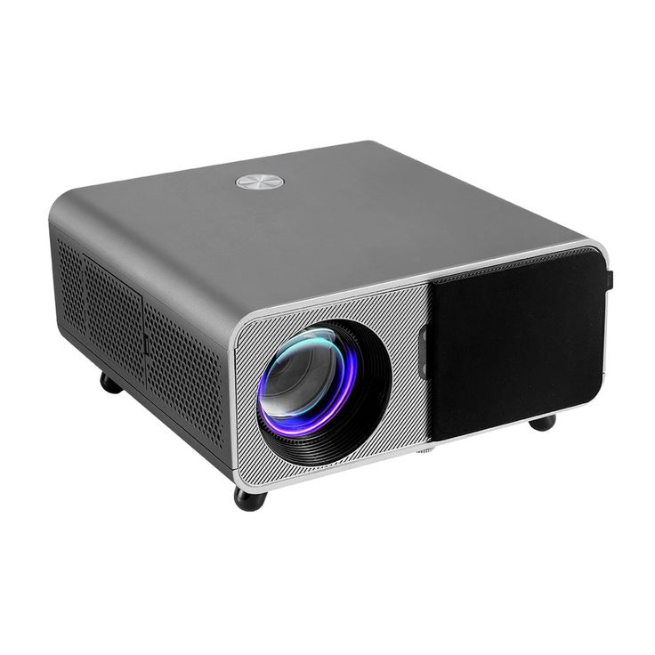

Overview
Storage and input/output (I/O) devices are vital for data handling and communication in a computer system. Storage devices hold data permanently or temporarily, while input devices allow users to send data to the computer, and output devices allow the computer to send data to users.
Storage Devices
-

Hard Disk Drive (HDD): Uses magnetic storage to store data. Commonly used for OS, games, and bulk data due to affordability and capacity (1TB+).
-

Solid State Drive (SSD): Provides faster data access and boot times. Available in SATA and NVMe formats. Essential for performance-focused systems.
-

Optical Drive: Reads and writes CDs, DVDs, and Blu-rays. Useful for legacy software, media, and archival purposes.
-

USB Flash Drive: Flash-based removable storage, excellent for portability, backups, and sharing data between systems.
-

Memory Card: Small form-factor storage for cameras, smartphones, and embedded systems. Available in SD, microSD, and CF formats.
Input Devices
-

Keyboard: Primary tool for entering text, commands, and shortcuts into the computer. Comes in wired, wireless, mechanical, and membrane variants.
-

Mouse: A pointing device that enables navigation, selection, and interaction with GUIs. Available as optical, laser, wired, or wireless.
-

Scanner: Digitizes physical documents and images. Useful in offices and archival settings for converting paper to digital form.
-

Webcam: Captures video for communication (Zoom, Teams) or streaming. Often integrated in laptops.
-

Microphone: Captures audio. Used for voice recognition, recording, and online communication.
Output Devices
-

Monitor: Displays the graphical interface. Comes in LCD, LED, OLED types and various resolutions (1080p, 4K, etc.).
-

Printer: Converts digital documents into paper format. Includes inkjet, laser, and 3D printers.
-

Speakers: Output sound. Used for music, system alerts, videos, and conferencing.
-

Projector: Displays computer output on large screens. Ideal for classrooms, presentations, and meetings.